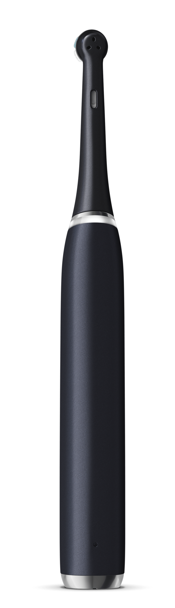
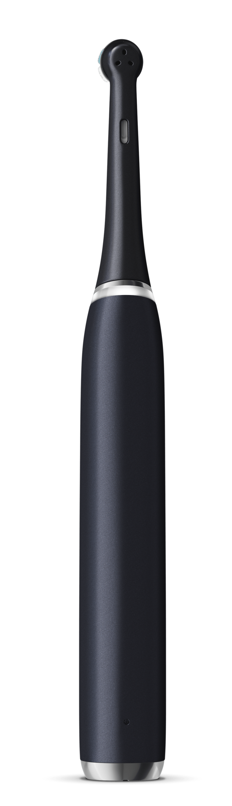

iO Series 9
La meilleure brosse à dent connectée
Expérimentez Oral-B iO™, le meilleur brossage d’Oral-B avec la technologie magnétique révolutionnaire iO™ et l’affigage interactif en couleur pour une sensation de propreté professionnelle et une experience de brossage douce. Disponible en trois couleurs distinctes.
-
Le meilleur nettoyage d’Oral-B avec la technologie magnétique révolutionnaire iO™ pour un brossage professionnel et une expérience tout en douceur.
-
Combine la brossette ronde unique d’Oral-B avec des micro-vibrations douces pour une sensation de fraîcheur et de propreté en bouche, et des gencives 100 % plus saines en une semaine.
-
Suivi des dents en 3D avec l’I.A. pour surveiller le brossage sur les surfaces avant, supérieure et arrière de vos dents, vous guidant pour obtenir le nettoyage le plus complet possible
-
L’affichage interactif en couleurs vous fournit des informations essentielles : les modes de brossage, le rappel de remplacement de la brossette, il vous salue au démarrage et vous donne un sourire pour un travail bien effectué.
-
7 modes intelligents pour personnaliser votre brossage : Propreté, Douceur, Soin des gencives, Propreté Intense, Blancheur, Propreté de la langue, Extra-Douceur.
-
Le meilleur nettoyage d’Oral-B avec la technologie magnétique révolutionnaire iO™.
-
Combine la brossette ronde unique d’Oral-B avec des micro-vibrations.
-
Suivi des dents en 3D avec l’I.A. pour surveiller le brossage de vos dents, vous guidant pour obtenir le nettoyage le plus complet possible.
-
7 modes intelligents pour personnaliser votre brossage.
 

Coloris Blanc
Coloris Noir
Coloris Rose